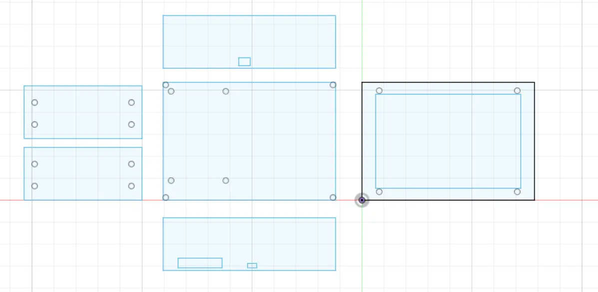
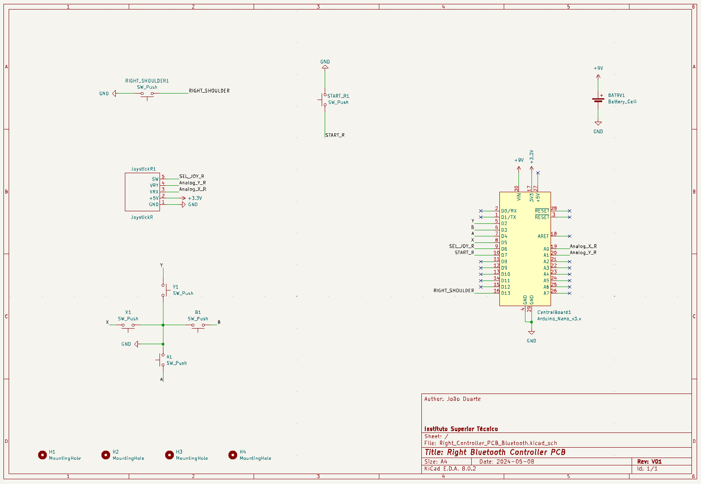

Mounting the Console (06/06/2024):
[Gonçalo, Lucas]
We used acrylic specific glue and hot glue to get the case parts together!:
Video editing and Refilming (06/06/2024):
[Bernardo, Lucas]
Re-filmed some scenes to enhance sound and video quality
and edited some of the video.
Custom Menu (04/06/2024):
[Miguel]
In an attempt to make our console more user friendly,
we thought of creating a custom menu
that would be more intuitive to use.
After analysing
MiSTer's main binary,
we found the file responsible for handling the menu
and altered it to achieve our goal.

Controllers Case Alterations (04/06/2024):
[Gonçalo]
Some modifications needed to be made to print out the controllers cases:
Filming Day! (03/06/2024):
[Bernardo, Lucas, João P., Miguel]
Today's filming day for the product video!
Printing and Cutting (03/06/2024):
[Gonçalo]
We went to iStartLab to print out
the rest of the 3D parts and cut the cases:
Laser Cutting Files (02/06/2024):
[Gonçalo, João P.]
Later in the day, we made the files for the laser cutter:
Main Case:

Controllers:
Controller Case (02/06/2024):
[Gonçalo]
The people over at iStartLab suggested we make these cases
in acrylic to speed up the printing process and waste less material,
so we proceeded to make a 3D modeling to have an idea
of how it would look in the final:
Video Material (31/05/2024):
[Bernardo]
We contacted IST Taguspark to use their filming equipment.
Testing the controllers (30/05/2024):
[Everyone]
Today we grabbed another Arduino
and gathered to check if the controllers were working!
To test them we used a game on PC
(Celeste):
Finishing the controllers! (29/05/2024):
[Miguel e João]
To finish off the controllers we had to
separate the pin bars to the size of our choosing:
We soldered the pin bars and tested the connections with a multimeter:

While sloting everything into place, we noticed the joysticks
were bumping into the buttons (oops, a little miscalculation üíÄ).
To solve this we cut a bit of the joystick.
Here we have both of the controllers finalized:
INSERT FINALIZED CONTROLLERS IMAGE HERE
When we went to test them, an Arduino wasn't working.
We will test them another day...
Controllers holders printing (27/05/2024):
[Gonçalo]
Today we went to print the Controller Holders in iStartLab:
Two days later we went to pick them and here's the result!:
Poster News and Project Reunion [No. 6] (22/05/2024):
[Poster: Miguel, Reunion: Everybody]
We then heard that we were supposed to make more of a scientific poster
instead of a marketing one and tried to make one to show
to our coordinator and monitor what we were thinking about:
Now in the reunion, we talked, between other things,
about the poster and told them what we heard from other groups.
They were confused and we sent an email to the curriculum unit responsible
who said we had to make a fusion of marketing and scientific based poster.
Making of: PCBs (Part 1) (21/05/2024):
[Miguel, João D.]
We were finally allowed authorization to use the PCB workshop! With this we started working as soon as possible.
We started making the left sided controllers' PCB.
Sr. Rui made most of the first one as we watched
so we could learn how to do it!
We grabbed a sheet of copper and noted on it the size of the PCB
with the help of a piece of paper where we printed the front copper layer.
We then cut the sheet of copper:
After that we tapped the piece of paper with the ink
sided with the copper so that the ink would stick to it.
We then placed it in a heated rolling machine:
After we rolled it a few times, we placed the copper piece in water
to cool it so we could take out the paper.
We had to rub it to take it out and had to be careful not to use nails
as not to take out the ink as it could interrupt the tracks
(the below video is from the other PCB as we forgot to film this one):
With this we just had to make sure the tracks were stuck together
to then throw it in the acid tub, where the stuff
on the surface of the sheet would erode
(there were a few times where they weren't
and we had to remake the whole process again):
After this we just had to rub some acetone on the PCBs to clean it up:
After this we went to make the other PCB (the right one)
so we repeated the previous process yet again.
While we waited for the right one to hatch on the acid vat,
we drilled most the left PCB:
We'll try to finish at least one of the PCBs tomorrow
(at least holes, maybe soldering the sockets)!
Last few changes to the PCBs (21/05/2024):
[Miguel, João D.]
Some changes were made to the PCBs in order to be able to make them in the Taguspark campus' PCB workshop:
- Arduino had to be flipped to the same side of the joysticks and buttons;
- Pads were made bigger;
- Pad holes were made smaller (to increase the tolerance when drilling holes).
These files are available, as always, for download on the
Downloads and Useful Links tab.
Case Supports for the Controllers (19/05/2024):
[Gonçalo]
Some supports were made to hold the controllers in place,
you can see a preview of them below:
Continued development of the main case! (16/05/2024):
[Gonçalo]
Main case almost finished! We just need to check what screws will
we use to hold the case and insert the screwholes into the case.
We also need to add a hole to put the HDMI.
You can see some previews of the case below:
Demo Day Poster [1] (15/05/2024):
[Miguel]
We started creating a poster to present on demo day.
We started by making a simplified version,
presenting only the console and a few games you could play on it,
as well as the general gist of the project
and a QR code redirecting to our landing page:
The team asked for some feedback between ourselves and outsiders
and agreed the poster needed more color:
Finalized Controllers' PCBs (13/05/2024):
[João D.]
Changed the PCBs mounting hole to 3.2 mm (M3) although it's center
is the same distance (4 mm) from the edge of the PCB.
Also made sure the joysticks and buttons where
the same distance from the edge of the PCB on both sides
and the select and start buttons would be the same distance
on both controllers.
Both PCBs version where updated to V1.2 and can be found on the
Downloads and Useful Links tab.
An email will be send to make the PCBs in the Taguspark camp.
Corrected the some measurements on the PCBs (12/05/2024):
[João D.]
Changed the PCBs mounting hole to 3 mm and changed it
so their center would be 4 mm apart from the PCB's edge.
Also changed the spacing between the joysticks and buttons
and aligned them in both PCBs (left and right controllers).
Both PCBs version where updated to V1.1 and can be found on the
Downloads and Useful Links tab.
Tested the battery (10/05/2024):
[Everyone except Gonçalo]
We received the battery and the charger IC and proceeded to test it.
After a while we realized the polarity on the battery
was inverted when compared to the one on the charger IC.
So it wasn't charging at all...
(thank god for the overvoltage protection circuit on the battery)
We will try to talk with Sr. Rui to help us
invert the connector on the battery.
MUX IC Test Automation (08/05/2024):
[Bernardo]
For the implementation of automatic switching of HDMI
outputs between the console's monitor and an external one,
a circuit was designed that used the 74HCT4053N Integrated Circuit.
To test the IC's used on the project, an Arduino sketch was made.
It will be found in the Downloads and Useful Links tab.
Here is a photo of one such test.

Right Bluetooth Controller's PCB finished!(08/05/2024):
[João D.]
The Right Bluetooth Controller's PCB is now finished
and can be found in the
GitHub page.
This link can also be found in the
Downloads and Useful Links tab.
Here's a photo of the Schematic:

And the Layout:
Also corrected the Left Controller's Gerber files because they were plotted without the Back Silkscreen.
Left Bluetooth Controller's PCB finished! (07/05/2024):
[João D.]
The Left Bluetooth Controller's PCB is now finished
and can be found in the
GitHub page.
This link can also be found in the
Downloads and Useful Links tab.
Here's a photo of the Schematic:
And the Layout:
Made code to use two different controllers with ESP-NOW (05/05/2024):
[Lucas]
As we want Bluetooth controllers that are on two different sides of the console,
we also have to separate them in two different microcontrollers.
To make MiSTer recognize it as only one Bluetooth device we need to
send data from one microcontroller to another.
To do so we use an ESP protocol called
ESP-NOW
(that works with the ESP8266, ESP32, ESP32-S and ESP32-C SoCs).
This protocol is faster, allows for long-distance communication and is ultra low-power
which makes it awesome to transfer data between two ESP32 microcontrollers.
To recap, we grab the data from the inputs from one microcontroller,
send them to the other one via ESP-NOW who then processes their own inputs
and the ones received by ESP-NOW and sends them through Bluetooth to MiSTer.
Joysticks and Buttons Used With Bluetooth (05/05/2024):
[Lucas]
Crafted code to make use of the joysticks and buttons
and send the signals with the previously mentioned
ESP32 BLE Gamepad Library
through Bluetooth.
MiSTer Recognizing Bluetooth! (03/05/2024):
[João P.]
We made some code using the
ESP32 BLE Gamepad Library
to connect to devices via bluetooth and being recognized as a Bluetooth controller.
To make sure it was recognized by MiSTer we went ahead and tested it out:
Speaker & Aux Test (2/05/2024):
[Bernardo]
As said previously we decided to have a aux audio output.
We decided to give the user the option to divert the audio to an external
device through an aux connector and wanted to implement it such that as solutions
as a device was detected the audio to the speakers was diverted.
To achieve this we used a simple aux connector with a mechanical switch.
We tested them out with an Arduino Uno to made sure they worked as intended
and here's the result:
Project Reunion [No. 5] (24/04/2024):
[Everyone]
The team has decided with Francisco Simplício (and informed Marcelino via email who agreed)
that we would drop the idea of putting the controllers directly through the FPGA and would
use a microcontroller instead.
To compensate for it we will try to do other things like external audio and video
and bluetooth controllers.
Console Design [3] (21/04/2024):
[Gonçalo]
After receiving some feedback from the other elements of the group
and some potential users, we made some updates on the case.
You can see the current state of it below:
Mid-Term Presentation (17/04/2024):
[Everyone]
Today we presented the mid-term presentation.
The final version of it will be available soon in the
planning section.
We also discussed some material
(like the display, an Arduino and some connectors)
asked for about a month ago.
It seems like the request didn't fully went through because
of a change in how we should request the materials.
We were then asked by Marcelino and Francisco to elaborate
a spreadsheet with the materials of that "lost" list and
another one that was asked further ahead.
The spreadsheet was delivered to them today and new material should be on its way.
Console Design [2] (16/04/2024):
[Gonçalo]
Created a place where the screen can rest

FPGA Controllers Development (10/04/2024):
[João P.]
At the start we had the idea to use the FPGA to manage the controls
while avoiding the use of extra hardware, in order to decrease the cost of our product.
However, the software that we are using (MiSTerFPGA)
was only made for the use of external controllers
that we would connect through USB or Bluetooth.
We thought that the handling of the input of the controllers
would only be through the FPGA logic tables,
which we could alter so it could use the spare pins instead of the USB/Bluetooth.
However, once we looked at the MiSTerFPGA code,
they were using various different code languages (VHDL, systemVerilog, etc)
that we had to learn to understand how the MiSTer worked.
After we mastered the different languages,
we noticed the input handling was more complex than what we were thinking.
Each console had their way to handle the inputs,
and were using the cpu to handle the controls of the inputs.
To alter this, it would be necessary to learn in detail
how the mister uses the cpu and also each console.
It would take a lot of time and effort to even learn how to do it,
to the point that it wouldn't be doable to have it finished in time.
Then we concluded that it wouldn't be worth to alter the MiSTerFPGA code.
Besides being very complex and time consuming,
it would be unable to receive MiSTerFPGA updates that the community is always working for.
Thus we just decided to build the detachable bluetooth controllers.
Finished V1 of Arduino Controller's PCB (03/04/2024):
[João D.]
The PCB layout was finished today and uses only 1 layer for it!
The first version of the Arduino version of the Controller's PCB is now out!
You can download V1 here.
This link will soon be available in a new Downloads tab!
Power Management Solution! (30/03/2024):
[Full time: Miguel]
[Half time: Everyone else]
In this day the team gathered and researched for new options for our power system
as previous solutions either charged too slowly or didn't have much capacity.
We were looking for how we would do the circuit described in
Update 14
and stumbled upon a miracle IC.
This IC has a connector for the battery and uses its energy to power a USB-A output.
It also accepts a 5V 2.4A USB-C input and, if it has it, will start charging the battery
and also powers the circuit through the USB-A while at it!
It was quite the godsent if you ask us...
You can check the IC here.
Start of Console Design [1] (27/03/2024):
[Gonçalo]
We started designing the console now that we have an ideia of most of the parts
that will go into the console
The first part made is below:
Project Reunion [No. 5] (27/03/2024):
[Everyone]
We discussed the power management situation further.
Schottky diode function test (25/03/2024):
[Everyone]
After our laboratory class, we asked for two Schottky diodes to test their functionality.
We set up a simple circuit with a voltage generator, a 11ohm resistor, and a diode.
In the photos we took, it is possible to conclude that the diode loses 0.3738V
instead of the 0.2V that the teacher had told us.
Project Reunion [No. 4] (20/03/2024):
[Everyone]
We explained our problem with the battery life of the console.
The batteries available on the market gives us 3 hours of use;
on the other hand, they recharge in 14 hours, which is bad for the demo day.
The professor suggested using two Schottky diodes to implement a circuit that is in use on mobile phones.
This circuit makes it so it uses outlet power to power the console while also charging the battery.
Speaker Test (19/03/2024):
[Bernardo]
We are going to use speakers from a Magalhães Laptop for our prototype.
Magalhães Laptops
were Laptops created for Educational Use in 2008.
One of the members of the group had an half-broken Magalhães Laptop
and decided to use the speakers for the project.
We tested them out with an Arduino Uno to made sure they worked
and here's the result:
Controller PCB in Development (17/03/2024):
[João D.]
Started development of the PCB for the controller.
We chose Ki-Cad to develop the PCB because of its free-of-use,
constant updates and broad documentation,
making it a great tool to learn for the future.
We started by making a symbol for the joysticks (which was previously non existant):
Then we made the schematic of the circuit
that will be put into the PCB. We ended up with something like the following:
After that, to make the PCB layout itself we first had to make a schematic for the PCB,
to do that we first needed a footprint for the joysticks
(which is a drawing of how a device should look on the PCB layout).
And so we made the PCB layout:
The rest of the PCB will be made in the future
and adjustments may be made on the parts shown above.
Note: We're still not sure if an Arduino will be used
for the controller or the FPGA itself.
We'll keep the blog updated about it!
Arduino detecting most controls (07/03/2024):
[João D.]
The Arduino code for detecting controls is working but unfortunately
we don't have enough cables to make every connection needed right now.
We also don't yet have the Arduino required to make it function as a keyboard
(We have a borrowed Arduino Uno but we would need, for example, an Arduino Nano ESP32).
Here you can find the
full list of supported devices.
We were thinking about using an Arduino Nano ESP32 as it is
the smallest, the least expensive of them all and does all we want.
We will post the Arduino code on GitHub when we make sure it works on an Arduino Nano ESP32 board.
In the end, the idea is to have everything, control-wise, in a PCB.
Project Reunion [No. 3] (06/03/2024):
[Everyone]
The team discussed about possible legal issues for the project (questions about hardware and software emulation legality).
We concluded that, for the hardware side at least, we were clear, as emulators have been declared legal in past lawsuits.
Only the inclusion of illegally distributed ROM's of the games could bring us trouble (which obviously we don't plan on doing).
The team also discussed about some website changes proposed by Luis Caldas Oliveira (PIC organizer):
- Inclusion of photos of the people involved;
- Some technicalities in wording.
He also proposed we talk to some people who might use the product in order to get some feedback.
Afternoon work session [No. 1] (06/03/2024):
[Everyone]
A part of the team tried to get VGA output from the FPGA to make testing more convenient as many of the monitors
were VGA only.
Unfortunately, after messing around with the settings, we were unable to do so,
as apparently only some VGA to HDMI adaptors work with the MiSTer project.
Another part of the team went to test if we could get the FPGA working on DC voltage through a connector made
by Sr. Rui (Laboratory helper from the Taguspark campus):
With this we were able to confidently determine the necessary voltage and current to power the fpga,
even when running it's most demanding core:
For a good while, we were unsure of how much voltage it actually required,
since although most of the documentation says it required 5V and 1A,
for some reason the fpga has an LED that light's up when it receives 3.3V of power,
which left us a bit confused, as we have no idea why this value was picked.
The highest value we noted was about 5V and 1.1A, making it safe to assume the FPGA
won't consume more than 10W of power constantly.
As we did this work session a little bit before our project reunion, during our work session
Marcelino and Francisco appeared to check out our work. They came with a projector with and HDMI input
so we could show them what we did until now.
Here's an overview video of what we did:
Temperature measurements and PSX and NES cores update (29/02/2024):
[Miguel, João P.]
The team measured the FPGA running at 45ºC after about half an hour of PSX gameplay,
the core that is probably most demanding.
We will do further testing in a closed box,
but the temps seem probably fine and just an heat sink on the FPGA's processor
should do the work.
The PSX core is now working! We had to load a
PSX BIOS
to make it work but it is now working fine!
About the NES core, we discovered it had something to do with how the original games and consoles were made.
It seems like the NES core for the MiSTer project was made using USA standards,
that is, based on USA outlet frequencies.
Because of this, only USA ROMs for games should work with the NES core,
making other ROMs from Japan or Europe run differently from intended.
First hands-on! (27/02/2024):
[Full time: João D., Miguel, Lucas]
[Half time: João P., Bernardo, Gonçalo]
We started by following the
tutorial on the MiSTer FPGA documentation website.
So we flashed the micro SD card that came with the FPGA and booted up the FPGA with it:
It went into setup mode:
After that we waited some time as it said in the installation image (as seen above), but all we would get was a black screen.
We tried a bunch of things including flashing the micro SD card again, changing monitors, etc,... But nothing seemed to work.
We saw an example config file that seemed to have an option to allow VGA output. As all the monitors we were using at the time had VGA only input
we tried moving to a different room that had an HDMI input. We then found a room that had a projector with HDMI input so we went with that.
We tried doing the setup again and soon enough we had a video output!
After that we connected the FPGA through ethernet to run an updater script to download all the cores
We then loaded some games into a games folder on the micro SD card and played a bit!
Unfortunately NES games were running faster than intended and PSX games weren't running at all... The team will look into it.
Requested material on our hands! (26/02/2024):
[Everyone]
The material we requested previously was delivered to us. We will start working tomorrow on it!
Project Reunion [No. 1] (21/02/2024):
[Everyone]
The team members all attended the meeting with the project coordinator and monitor at around 17 o'clock.
We talked about the planning and roadmap.
We also were informed the material we ordered already arrived! Unfortunately we couldn't get it at the time
so Francisco will give it to Prof. Marcelino so he can deliver it to us on Monday.
Update on requested material [2] (23/01/2024):
[Everyone]
We were told the material was already requested on the IST shopping platform. After that we just need to wait for Prof. Marcelino dos Santos to give the last approval and we should get the material soon.
Update on requested material [1] (09/01/2024):
[Everyone]
We asked Dr Marli Gomes about the material list and she said she was waiting on supplier estimate for the material.
Sent temporary material list (22/12/2023):
[Everyone]
The temporary material list was sent to Dr Marli Gomes from the Scientific Area of Electronics
so hopefuly we can start working as soon as the 2nd semester starts.
The list was the following:
- FPGA (DE10-Nano from Terasic);
- SDRAM module;
- Joysticks.
Reunion with scientific advisor for material list and project proposal (19/12/2023):
[Everyone]
The team had a meeting with the project's scientific advisor Prof. Fernando Gonçalves about the material list and the project proposal.
We settled that, for now, we would order the FPGA (DE10-Nano from Terasic) with the SDRAM module and some joysticks.
Other things like the battery or the screen would come later.
We also wanted to get some buttons already but we were told there were already some within Técnico so there wouldn't be a need.
As for the project proposal, Prof. Fernando Gonçalves agreed on everything we proposed
(you could see some of the propositions on the "planning" section of the website).
We will soon send the temporary material list to be ordered.